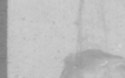

Beaubien-Perrault-Benington - Person Sheet
Beaubien-Perrault-Benington - Person Sheet
Birth11 Dec 1893, Montréal, Québec
Death13 Jan 1970, Montréal, Québec
BurialCimetière Côte-des-Neiges, Montréal, Québec75
Occupationarchitecte
FatherJoseph Ovide Perrault (1866-1923)
MotherLaure Yvonne Brunet (1867-1929)
Spouses

Birth25 Mar 1895, Montréal, Québec265
Death30 Apr 1987, Les Cèdres, Québec
BurialCimetière Côte-des-Neiges, Montréal, Québec75
FatherJoseph Beaubien (1865-1949)
MotherM. Josephine Larue (1868-1957)
Marriage28 Mar 1921, St-Viateur, Outremont, Québec231
ChildrenCharles Hubert (1922-2019)
Michel Brunet (1925-2010)
Jean Nicolas (1929-2016)
Josephine Laurette Charlotte (1931-2020)
Notes for Jean Julien Perrault
[Who's Who 1932] Architect. Mont St-Louis, Cath. H.S.. McGill B Arch 1915. Partner, Perrault & Gadbois. Dir, Viewmount Land Co, Viewmount Realties, Immeuble Themis, Rlwy Exch. Bldg. VP, Ch. of Commerce; Pres, Mtl Bldrs Exch; Home 4115 Cote des Neiges. Office 4200 Sherbrooke.
[Richard] Joseph Henri Emile Jean Julien Perrault
http://www.dictionaryofarchitectsincanada.org/architects/view/1387
Obit https://news.google.com/newspapers?nid=1946&da...94,3172153&hl=en
President de l’Assn des archiectes du Quebec 1940
https://numerique.banq.qc.ca/patrimoine/details/52...Alfred%20Pinsoneault
[Richard] Joseph Henri Emile Jean Julien Perrault
http://www.dictionaryofarchitectsincanada.org/architects/view/1387
Obit https://news.google.com/newspapers?nid=1946&da...94,3172153&hl=en
President de l’Assn des archiectes du Quebec 1940
https://numerique.banq.qc.ca/patrimoine/details/52...Alfred%20Pinsoneault